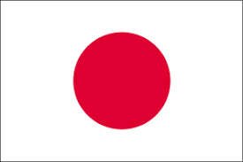
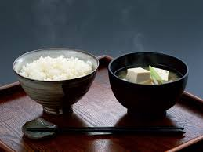
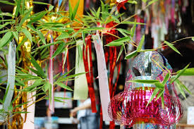
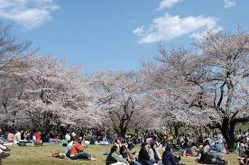

-日本について-

日本は東アジアの最東端の島国である。
この国の国土は北海道、本州、四国、九州から成る日本列島と、たくさんの島々で構成されている。
正式な首都は定められていない。東京は実質的な首都である。
- 人口：約1億2500万人（2021年時点）
- 面積：約37.8万平方キロメートル（火山の噴火によって少しずつ増えているといわれている）
- 言語：日本語
- 通貨：日本円（JPY）
- 政治体制：立憲君主制・民主主義
- 天皇：徳仁天皇（2026年1月時点）
- 総理大臣：高市早苗（2026年1月時点）
- 憲法：日本国憲法
- 国歌：君が代
☆文化
日本は豊かな文化を持つ国である。
- 伝統文化：武道、茶道、華道、能楽、歌舞伎...etc
- サブカルチャー：アニメ、マンガ、J-POP...ect
☆時代区分
神話上の出来事も含めると約2700年の歴史があり世界最古の国としても認められている
日本史の時代：
- 縄文時代（約1万年前～紀元前300年頃）
- 弥生時代（紀元前300年頃～3世紀頃）
- 飛鳥時代（592年～710年）
- 奈良時代（710年～794年）
- 平安時代（794年～1185年）
- 鎌倉時代（1185年～1333年）
- 室町時代（1336年～1573年）
- 安土桃山時代（1573年～1603年）
- 江戸時代（1603年～1868年）
- 明治時代（1868年～1912年）
- 大正時代（1912年～1926年）
- 昭和（1926年～1989年）
- 平成（1989年～2019年）
- 令和（2019年～現在）
☆食文化
日本の国土は大部分が温帯に属し、南北に長く、海洋に囲まれているため、四季がはっきりしており降水量も多い。
そのため、魚介類や海藻、野菜や山菜、果物など様々な食品が自然の恵みとして得られる。
また、稲作の導入、仏教の伝来、鎖国や文明開化、第二次世界大戦などを経て、様々な異なる食文化の影響を取捨選択した独自の食文化が成り立っている
日本の伝統的な食文化である和食はユネスコの無形文化遺産に登録されている。
素材の味を大切にしていることが、和食の最大の特徴である。

☆和洋折衷
西洋の文化と日本独自の風習や文化を合体させる事を和洋折衷という。
文明開化後に西洋文化が流入してきた際に、和洋折衷の文化が生まれた。
代表的な和洋折衷の料理：
☆四季
日本の四季は非常に明確で、それぞれの季節には特徴的な風景や行事がある。
- 春：桜の季節。花見などが行われる
- 夏：暑い。夏祭りや海での活動が盛り上がる。6月や7月は梅雨と呼ばれる雨期である。
- 秋：紅葉の季節。紅葉狩りが行われる。栗が一番うまい季節。
- 冬：雪が降る。特に北海道や北陸では多く雪が降る。
それぞれの月の行事
それぞれの月に年中行事や祝日がある。
ここではその一部を紹介する
- 1月：正月、成人の日
- 2月：節分、建国記念日（2026年時点では2月に天皇誕生日が含まれる）
- 3月：ひな祭り
- 4月：花見
- 5月：端午の節句、母の日
- 6月：父の日
- 7月：七夕、海の日
- 8月：お盆、花火大会
- 9月：敬老の日、秋分の日
- 10月：ハロウィン、スポーツの日
- 11月：文化の日、勤労感謝の日
- 12月：クリスマス、大晦日

